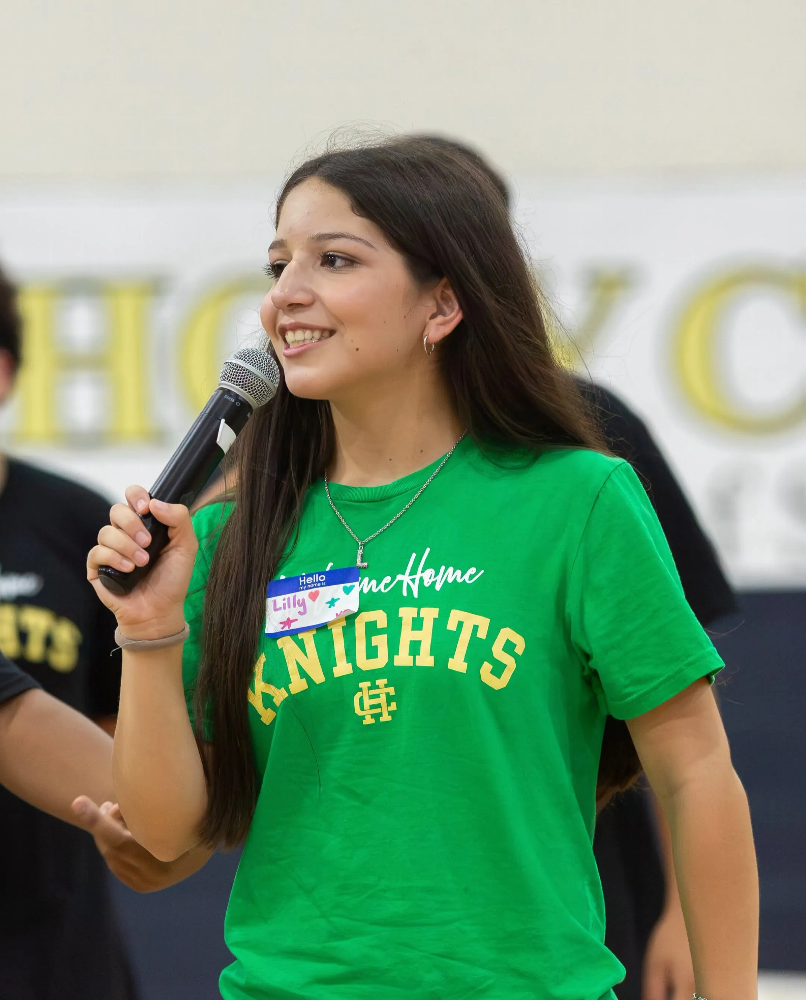
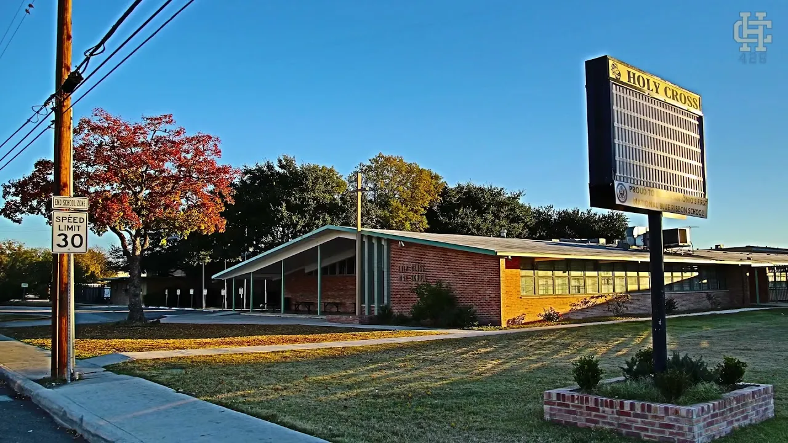
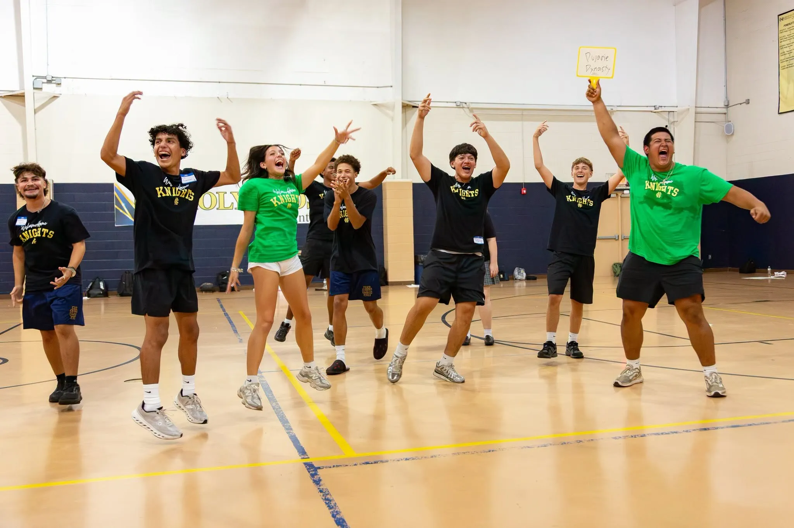
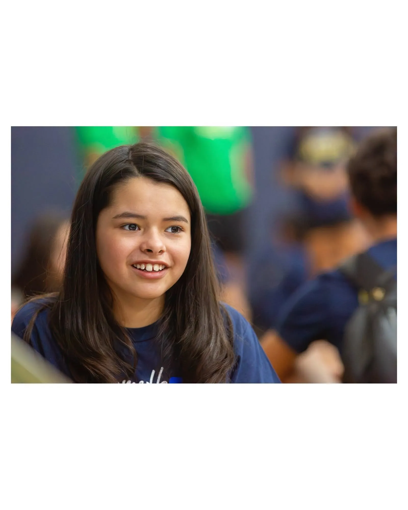

Inicio › Admisiones
Admisiones · 2027–28Un solo lugar para cada paso. Sus preguntas llegan directo a admisiones, y aplicar es gratis.
✓ Sin costo de solicitudEs el formulario de la escuela: algunos datos sobre usted, su hijo(a) y lo que le interesa. Admisiones le puede ayudar con colegiatura, TEFA, visitas o la solicitud.
O llame ahora: [TEL_ADMISIONES]
En un día de prueba, su hijo(a) va a clases reales con un estudiante de Holy Cross. Los recorridos llevan a su familia por el campus y terminan con tiempo para preguntas.
Los recorridos para 8.º grado son del 26 de oct. al 4 de nov. de 2026. CONFIRMAR

La solicitud está en nuestro sistema FACTS. Es el único paso que sale de este sitio, y le avisamos antes.

Tenga esto a la mano
Va a ir a nuestro sistema de solicitudes (FACTS). Se abre en otra pestaña. No tiene costo. Si se atora, llame a [NOMBRE_ADMISIONES] al [TEL_ADMISIONES]. FACTS puede estar solo en inglés.
[ENLACE_FACTS] Muestra: este enlace no está conectado.
Pida una llamada o reserve un recorrido. Cualquiera de los dos inicia la conversación.
Su hijo(a) pasa un día en clases reales. Es opcional, pero la mayoría lo hace. CONFIRMAR
En línea por FACTS. Sin costo.
Decisiones el Día de Aceptación, 20 de enero de 2027. CONFIRMAR
Pague el depósito y solicite TEFA. Le ayudamos con las dos cosas.

Holy Cross es la única escuela católica mixta de San Antonio donde un estudiante puede empezar en 6.º grado y quedarse hasta graduarse. CONFIRMAR Quienes empiezan en secundaria llegan a 9.º conociendo ya a los maestros, la rutina y a sus amigos.
También en inglés: esta página
Llame (210) 433-9395